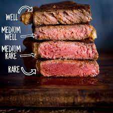

Recipe for Steak

Description
This easy steak marinade is great for rib steaks but can be used for almost any cut of beef.
Ingredients
- ¼ cup olive oil
- ¼ cup balsamic vinegar
- ¼ cup Worcestershire sauce
Steps
- Mix olive oil, balsamic vinegar and Worcestershire sauce in a small bowl. Season with salt and pepper.